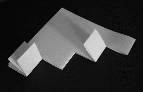
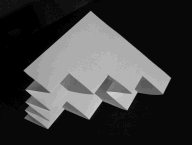
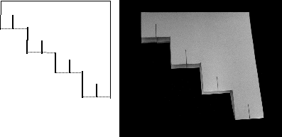

There are now four pieces.
Fold pieces one and three, counting from the left, to the ends of the cuts.
Then fold these pieces inward as before.
|  |  |
| The second folds | Refolded inward |
Mark the middle of each of the horizontal folds and cut half the length of the previous cuts.
Fold and refold inward as before
|  |
| The third cuts |
Return to the Sierpinski gasket.